3.1 数字集成电路分类
集成电路进行数字系统设计的优点：可靠性高、可维护性好、功耗低、成本低等
数字集成电路根据采用的半导体期间可以分为两类：
- 双极型集成电路：采用双极型半导体期间作为元件。特点：速度快、负载能力强，但功耗较大、集成度较低。
- 单极型集成电路(MOS)：采用金属、一氧化物半导体场效应管作为元件。特点：结构简单、制造方便、集成度高、功耗低，但速度较慢
3.2 半导体期间开关特性
3.2.1 晶体二极管
正向特性：有门槛电压，即二极管开始导通的正向电压，又称阈值电压。
反向特性：在反向电压作用下处于截止状态，反向电阻大，相当于断开。
3.2.2 晶体三极管
截止、放大、饱和3种状态。
3.3 逻辑门电路
3.3.1 简单逻辑门电路
- 与门
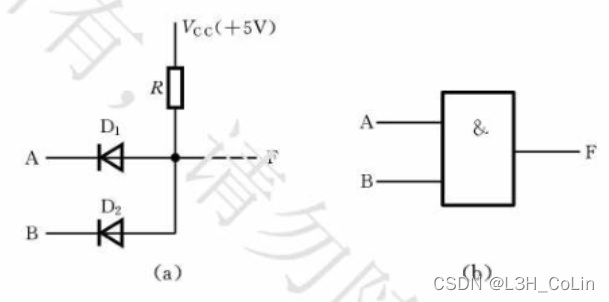 - 或门
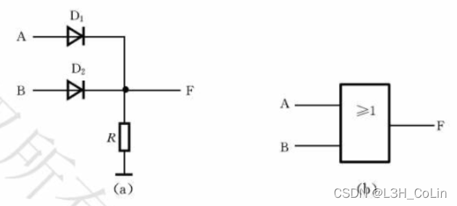
- 非门
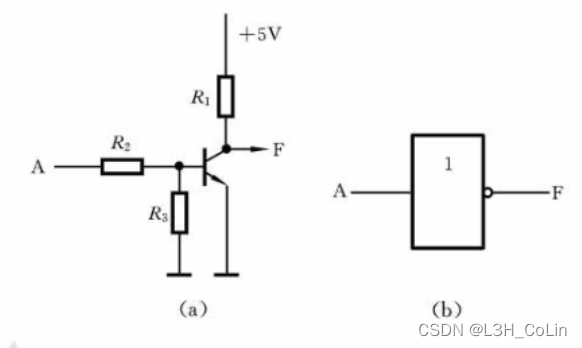
3.3.2 TTL集成逻辑门电路和CMOS电路
TTL功耗大、集成度低，广泛用户中小规模集成电路中
常用TTL集成电路芯片有74系列
两种特殊门电路：
- 集电极开路门(OC门)
一种输出端可以直接相互连接的特殊逻辑门，可以实现“线与”逻辑
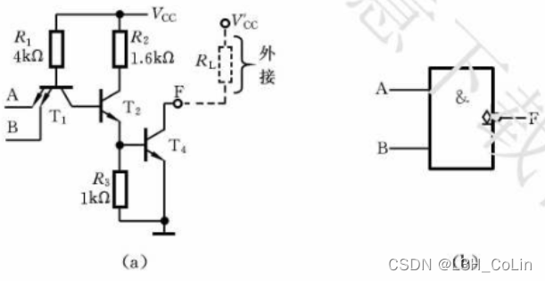 - 三态输出门(TS门)
常用于数字系统中总线传输控制，可以让共享总线的输入输出设备根据控制信号从总线获取或向总线发送数据
三种输出状态：高电平、低电平、高阻
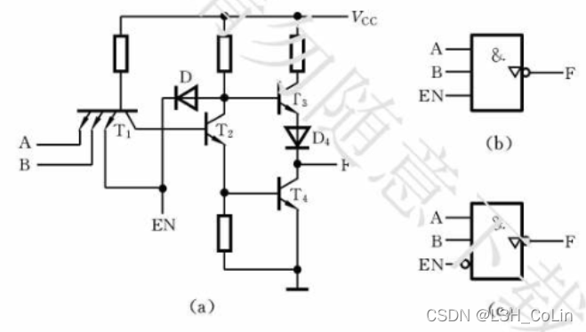
正逻辑与负逻辑
正逻辑：用高电平表示逻辑1
负逻辑：用低电平表示逻辑1
3.4 触发器
触发器：一种具有记忆功能的电子器件，用于存储一位二进制信息
特点：
- 有两个互补的输出端$Q,\bar Q$
- 有两个稳定状态，$Q=1,\bar Q=0$称为“1”状态，否则称为“0”状态。输入信号不变时，触发器状态稳定不变
- 在一定输入信号作用下，触发器可以从一个稳定状态转移到另一个稳定状态
- 输出状态不仅与现时输入有关，还与原来输出状态有关
- 按功能分类：RS型触发器、D型触发器、T型触发器、JK型触发器等
现态：$Q^n,\bar{Q^n}$，简记为$Q,\bar Q$
次态：$Q^{n+1},\bar Q^{n+1}$
3.4.1 基本R-S触发器
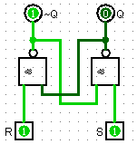
功能表：
| R | S | 功能 |
|---|---|---|
| 1 | 1 | 不变 |
| 1 | 0 | 次态为1 |
| 0 | 1 | 现态为0 |
| 0 | 0 | 不定（不允许） |
3. 钟控J-K触发器
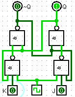
实际上就是相较于钟控R-S触发器添加了JK端均为1的处理：反转。JK端输入不同时赋J的值。
输出方程：$Q^{n+1}=J\bar Q+\bar KQ$4. 钟控T触发器
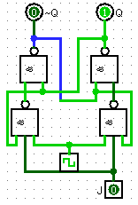
即将钟控J-K触发器的JK端接在一起。T=1反转，T=0不变
3.4.3 主从R-S触发器
空翻现象：在一个时钟周期内触发器发生2次及以上的变化，会造成系统状态的不稳定和工作的紊乱。
主从R-S触发器可以看做两个R-S触发器串联形成，这两个触发器的时钟信号互补。当主触发器解锁时，其信号变化对从触发器无影响。
从触发器的状态取决于主触发器解锁到锁定最后一课的状态，根据此状态设定从触发器。因此整个触发器输出信号只可能在时钟信号由1变为0时改变，提升了系统的同步性。
- 主从R-S触发器
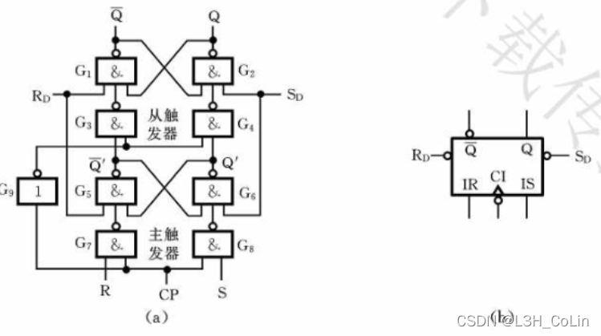
其中$R_D,S_D$为直接清零端和直接置1端，一般情况下为高电平，为低电平时可以直接为从触发器强制赋值。
- 主从J-K触发器
在主从R-S触发器的基础上，加从$\bar Q$到主触发器S端的反馈与从Q到R端的反馈：R=K，S=J
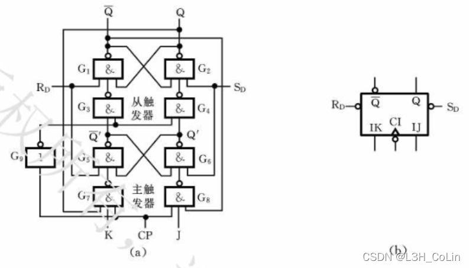
- 典型维持：阻塞D触发器
钟控D触发器的改进版，只在时钟信号由0变成1（称上升沿）时读取D信号并设置触发器状态，其余时间Q不变
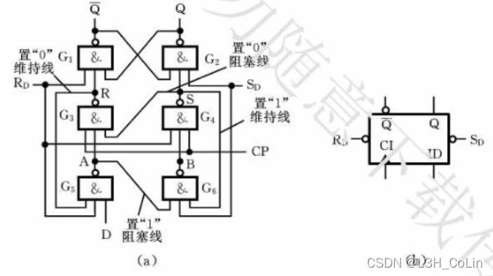